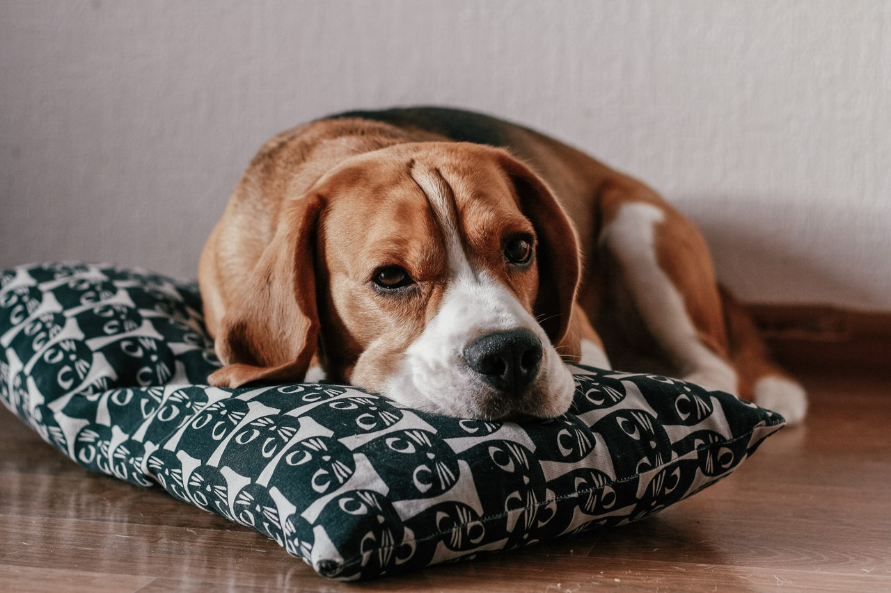
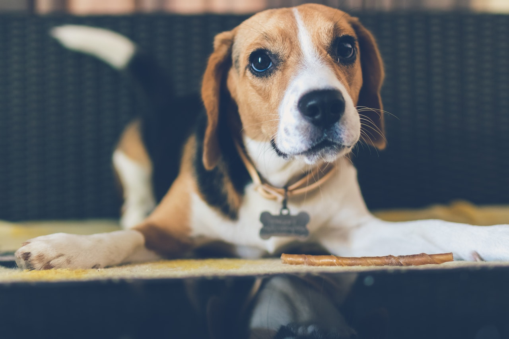

Bigl

Iako je ova rasa nastala u Engleskoj, psi veličine današnjeg bigla koji su takođe služili za lov na zečeve, lisice i drugu sitnu divljač, pominju se još u Staroj Grčkoj u 5. veku pre nove ere. I u to prastaro vreme, izuzetno razvijen njuh ovih pasa korišten je za traganje i pronalaženje divljači. Kao predak današnjeg bigla najčešće se pominje izumrla rasa pasa po imenu talbot, dovedena na područje Engleske u 11. veku, u vreme vladavine Vilijama Osvajača. Ova rasa pretežno bele boje ukrštana je sa engleskim hrtovima i na taj način pas je dobio sposobnost bržeg kretanja. Poreklo imena rase vezuje se za staroenglesku reč „begle“ što znači „mali“. Slične reči istog značenja susreću se i u keltskom jeziku tog vremena. Sa druge strane ime bigl vezuje se i za francusku reč sa značenjem „glasan“. Dok su u starom veku lovci hodajući pratili pse koji bi namirisali divljač, u srednjem veku ovaj pas je bio dovoljno mali da može stati u poseban džep napravljen u sedlu lovca koji bi na taj način došao do lovišta. U vreme vladavine Kraljice Elizabete I, ovaj minijaturni bigl je postao veoma popularna rasa. Sama kraljica nazivala ih je „psima koji pevaju“ zbog njihovog posebno harmoničnog laveža u vreme lova. U 18. veku mali psi nisu mogli da zadovolje sve zahtevnije potrebe lovaca što dovodi do učestalog ukrštanja ove rase sa većim psima. 19. vek predstavlja period u kome je standard rase bigl konačno uspostavljen, dok su čak četiri ranije verzije pasa ove rase u potpunosti izumrle. Iako je u to vreme zabeleženo samo 18 porodica bigl pasa, u drugoj polovini 19. veka dolazi do njenog razvoja i širenja u druge zemlje sveta, posebno na američki kontinent. Danas je bigl jedna od omiljenih rasa ljubitelja pasa koji se ne koristi samo za lov, već često živi u porodicama kao kućni pas i ljubimac. Njegovoj popularnosti svakako je doprineo i čuveni pas Snupi iz poznatog crtanog filma, koji je upravo pas rase bigl.
Izgled
Bigl je mali pas snažne i zdepaste građe, energičan i jak. Glava je okrugla i krupna, nos prav. Oči su krupne, boje oraha ili tamno smeđe, često oivičene crnom bojom. Uši su duge, ravne i dosežu do njuške, vise niz glavu blago zabačene unapred. Leđa bigla su ravna, a rep srednje dug visoko postavljen sa jakom osnovom. Kraj repa bi po pravilu trebao biti beo. Ravna i veoma gusta dlaka obično ima dve ili tri boje – belu i riđu ili crvenu, belu i crnu. Njuška je uobičajeno bela, mada može posedovati crne mrlje. Prosečna visina ove rase iznosi 33 do 40cm, a težina 13 do 18kg. Osnovna osobina ovog psa je izuzetno razvijeno čulo njuha koje poseduje oko 220 miliona receptora, zbog kojeg ga često nazivaju i „nos na nogama“. Upravo zbog ove osobine koristi se kao službeni pas na aerodromima, pogotovo za okrivanje krijumčarene hrane.
Narav
Bigl je pas vesele i uravnotežene naravi. Nije agresivan, niti plašljiv. Inteligentan je i snalažljiv i veoma odan porodici u kojoj živi. Osetiće i razumeti svaku promenu raspoloženja svog vlasnika. Pokušaće na svaki način da ga zaštiti, uteši i izleči ukoliko je bolestan. Dobro se slaže sa drugim psima budući da je navikao da lovi u grupi, ali je potrebno biti oprezan kada su u pitanju drugi kućni ljubimci, biglov razvijen lovački instikt za manje životinje može biti poguban. Važi za veoma tvrdoglavog psa koji će sve uraditi kako bi ostvario ono što je naumio. Ne voli da ostaje sam i zahteva dosta pažnje, igre, šetnje i aktivnosti. Stalno će vas podsećati na to da ima izuzetno razvijen njuh koji će slediti pre nego komande vlasnika. Bigl je pas koji je u lovu navikao da vodi svog vlasnika i ide ispred njega i na taj način će se ponašati i u toku šetnje. Njuškaće sve i slediti instinkt osećajući mirise i prateći njihov trag kilometrima. U takvim trenucima veoma se često dešava i da odluta i ukoliko vlasnik ne obrati dovoljno pažnje nestane na nekoliko sati. Ipak, ako ga povedete sa sobom na trčanje, zastajaće dok ne onjuši trag i pratiti svoj njuh pre nego poštovati pravila trkačke staze. Voli da kopa i istražuje. Ima izraženu potrebu za žvakanjem, pa mu je potrebno obezbediti dosta igračaka. Ubraja se u veoma glasne i pričljive rase koja ispušta najrazličitije zvukove od laveža do zavijanja, a ukoliko se oseti zanemarenim biće još glasniji i može biti veoma naporan za okolinu i u tom slučaju krajnje neposlušan. Iako je inteligentan i rado uči, nije bezrezervno poslušan. Ipak, blagovremenom dresurom naučiće da se socijalizuje i dobro ponaša u kući. Budući da je najčešće prijateljski nastrojen prema ljudima, ne ubraja se u pouzdane pse čuvare.
Nega i zdravlje
Dlaka bigla je kratka i oštra, ne linja se puno i ne zahteva više nege od redovnog četkanja i povremenog kupanja. Može posedovati karakterističan miris. Dobro podnosi i prilagođava se različitim temperaturama. Ubraja se u proždrljive pse koji će ukoliko mu dopustite jesti dok se ne prejede. Dnevne obroke potrebno je ograničiti budući da je sklon gojenju. Uši ove rase su prilično osetljive i potrebno ih je redovno pregledati i čistiti. Iako se ubraja u zdrave rase u istoriji bolesti bigla javljaju se poremećaji rasta, epilepsija, oboljenja kostiju i očnih bolesti. Prosečan životni vek pasa ove rase je 11 do 15 godina.
